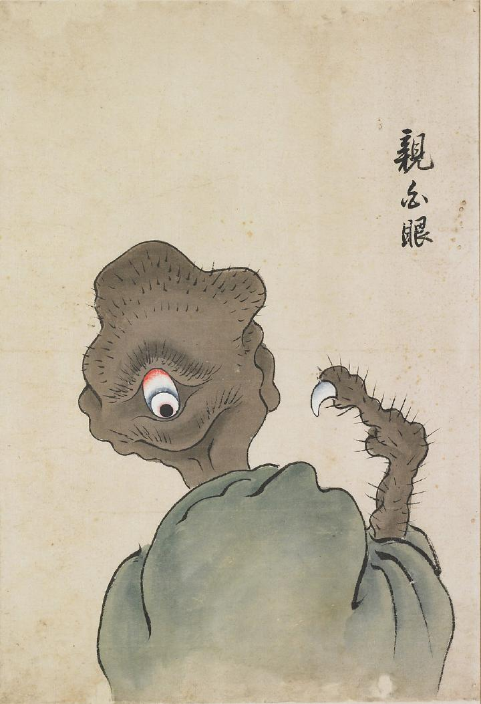

親白眼；オヤシロメ，後眼；ウシロメ

後頭部に大きな目がある化物。肌の色は茶色く黒い毛があちこちに生えている。右手には指が1本しかなく、大きな白い爪が生えている。
著作者：北斎季親／出典：親書誌：U426_nichibunken_0052：化物尽絵巻；バケモノヅクシエマキ／日付：2007／資源識別子：U426_nichibunken_0052_0001_0000
Copyright (c)2010- International Research Center for Japanese Studies, Kyoto, Japan. All rights reserved.